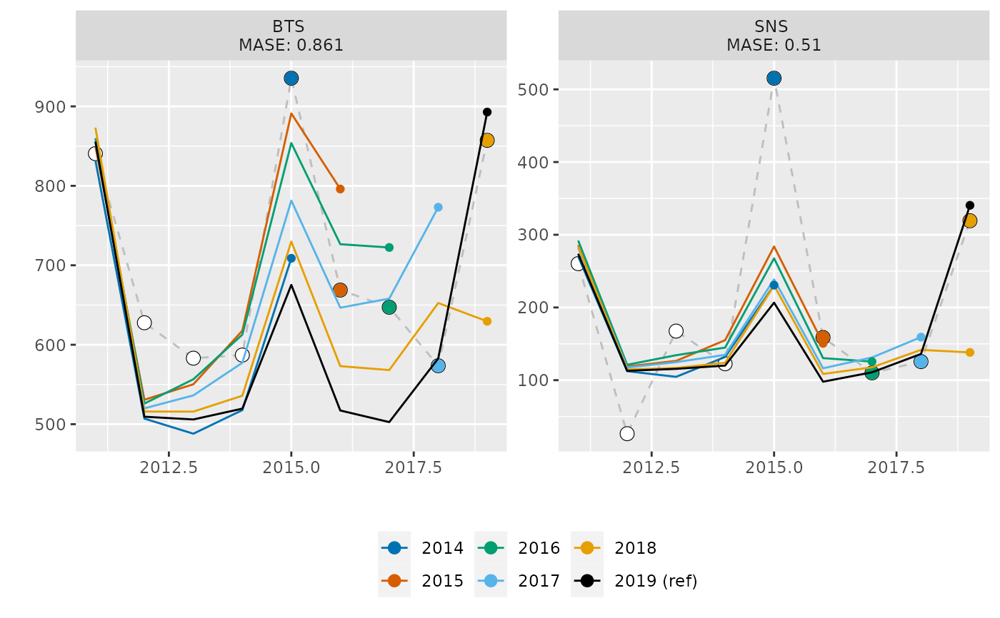
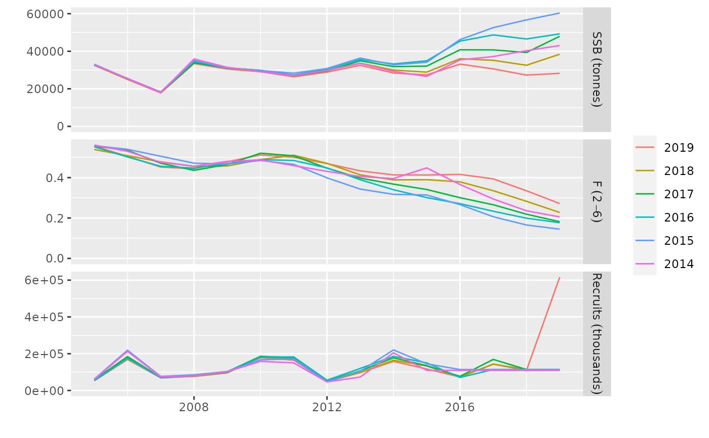

The output of aaphcxval consist of a list with two elements, named 'stocks'
and 'indices'. The first is an object of class FLStocks, each a peel from
the restrospective run. The second element is a list of FLIndices object.
The first FLIndices object, named 'data', is a copy of the input 'indices'
argument, with the additioned catch.n slot, if originally missing. The next
element, named as the final year of the data set, contains the naive prediction
of the input FLIndices, while the remaining elements are the result of a
hindcast prediction of the relevant indices, those within the year range of
as set ny nyears.
aaphcxval(stock, indices, control, nyears = 5, nsq = 3, pin = NULL)Input FLStock object.
Input FLIndices object.
Number if years for retrospective, defaults to 5.
Number of years for average biology and selectivity, defaults to 3.
dsata.frame of parameter estimates to use as starting values.
A list containing elements 'stocks', of class FLStocks, and 'indices', a list of FLIndices objects. See details for the structure of this list.
data(sol4)
sxval <- aaphcxval(sol4 + fit, indices, control=control(fit),
pin=stdfile(fit))
#> Warning: executing %dopar% sequentially: no parallel backend registered
#> [2019]
#> [2018]
#> [2017]
#> [2016]
#> [2015]
#> [2014]
plotXval(sxval$indices)

plot(window(sxval$stocks, start=2005),
metrics=list(SSB=ssb, F=fbar, Recruits=rec))
